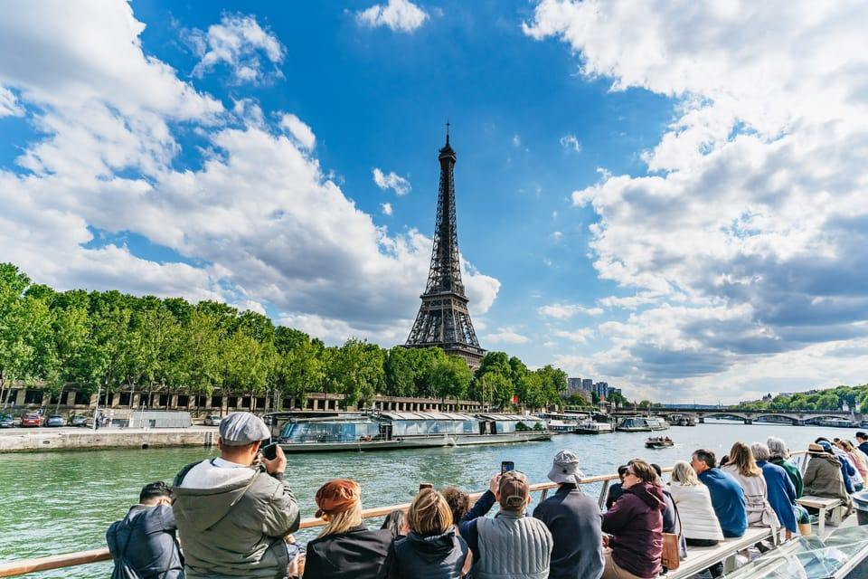
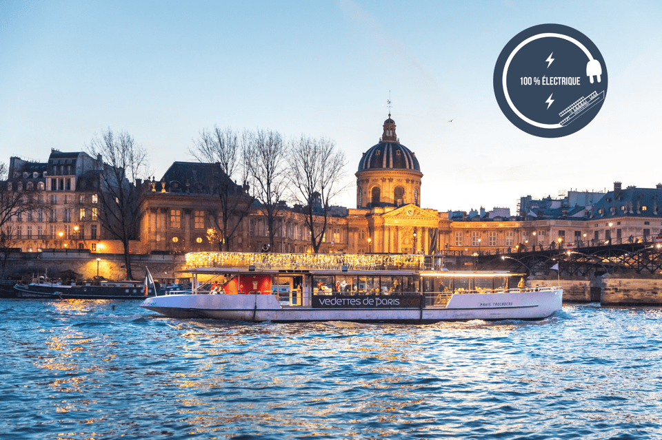
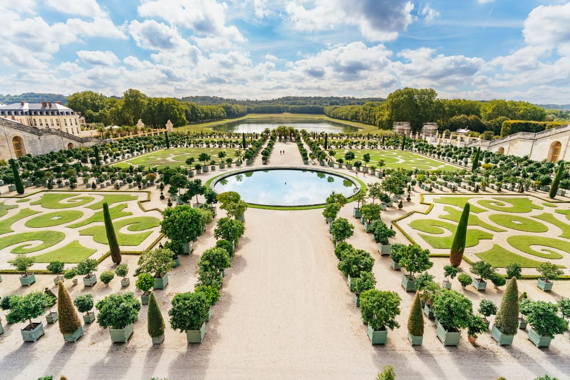
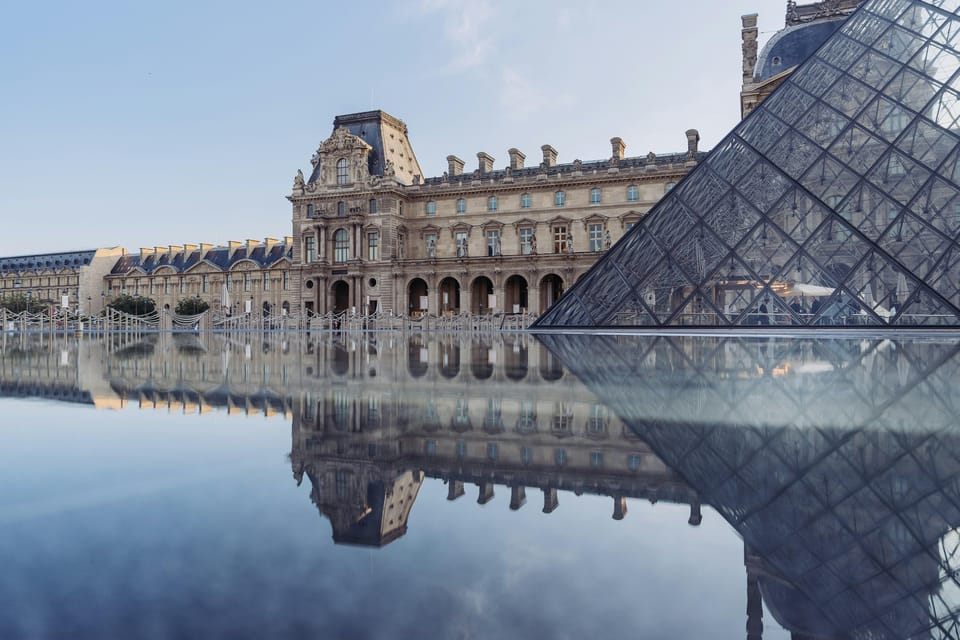
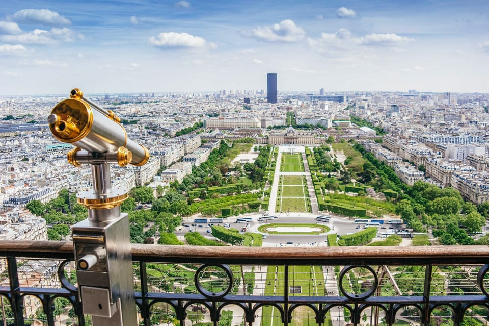
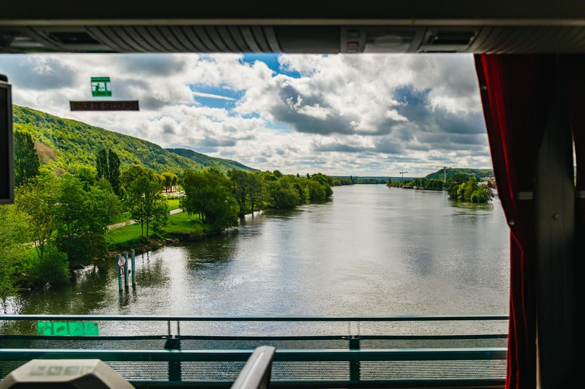
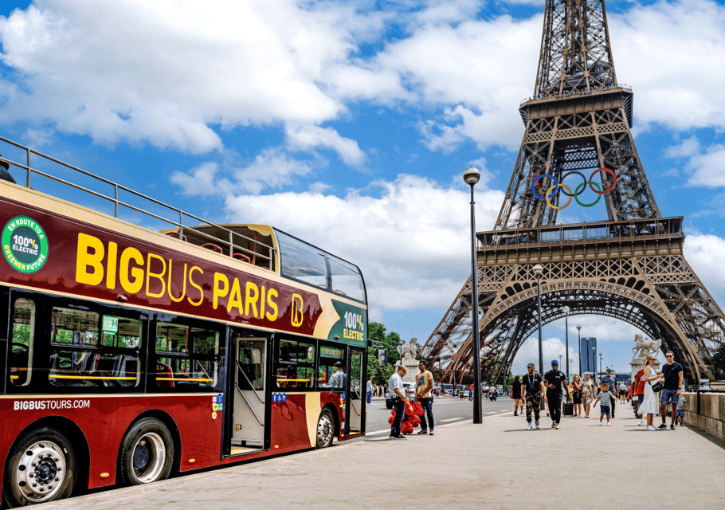
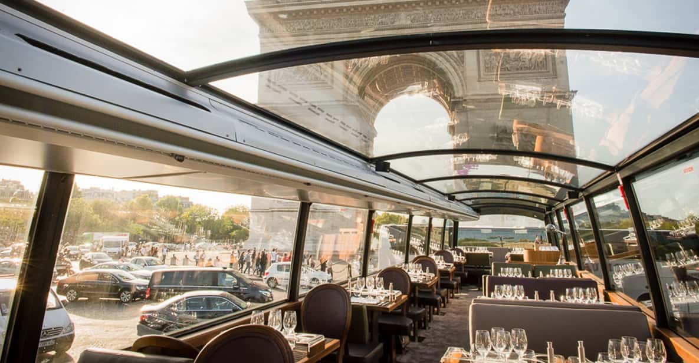
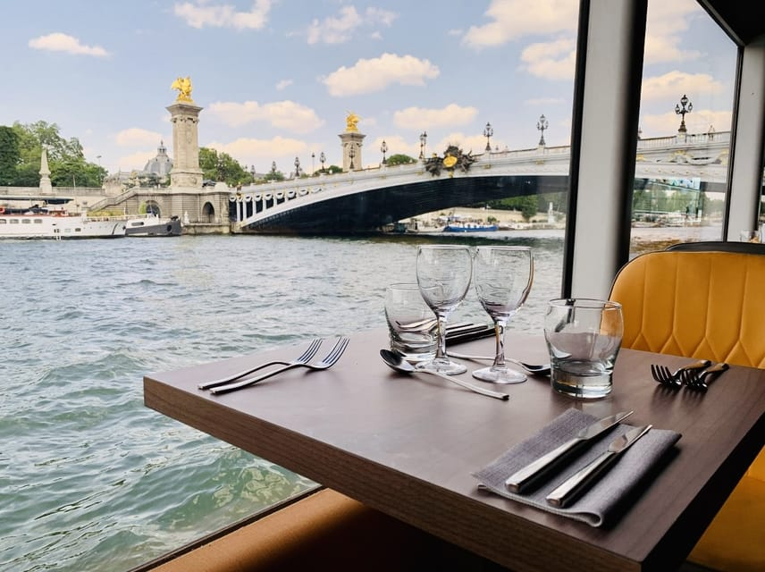
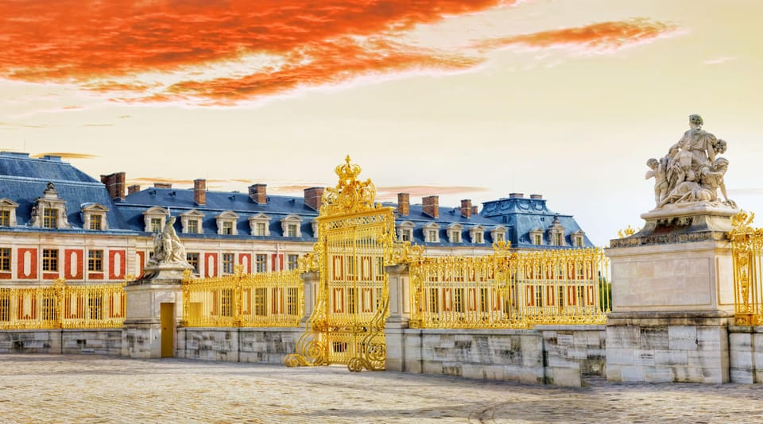

Welcome to Your Travel Dashboard
TOP 10 THINGS TO DO IN PARIS:
- Paris: 1-Hour Seine Cruise starting at the Eiffel Tower

- Paris: Evening River Cruise with Music

- Versailles: Skip-the-Line Tour of Palace with Gardens Access

- Paris: Louvre Museum Masterpieces Tour with Reserved Access

- Paris: Eiffel Tower Summit or Second Floor Access

- From Paris: Giverny, Monet’s House, & Gardens Half-Day Trip

- Paris: Big Bus Hop-On Hop-Off Tour with Optional Cruise

- Paris: Bustronome Gourmet Lunch Tour on a Glass-Roof Bus

- Paris : Seine River Bistronomic Dinner Cruise

- Day Trip to Mont-Saint-Michel from Paris

Logout